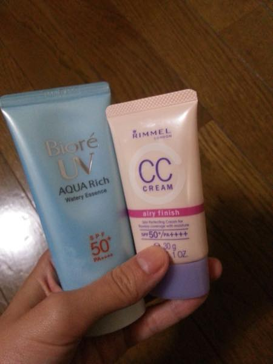
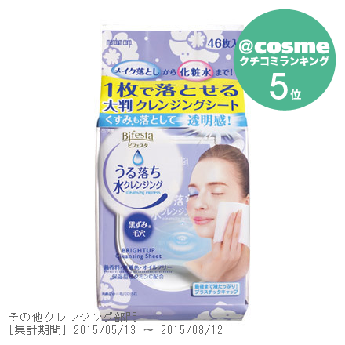
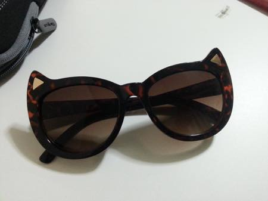
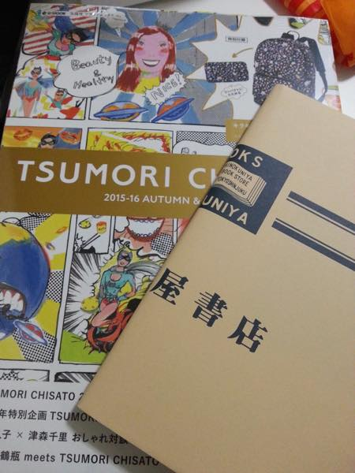
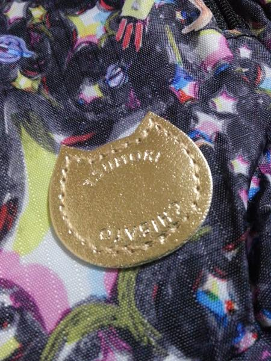
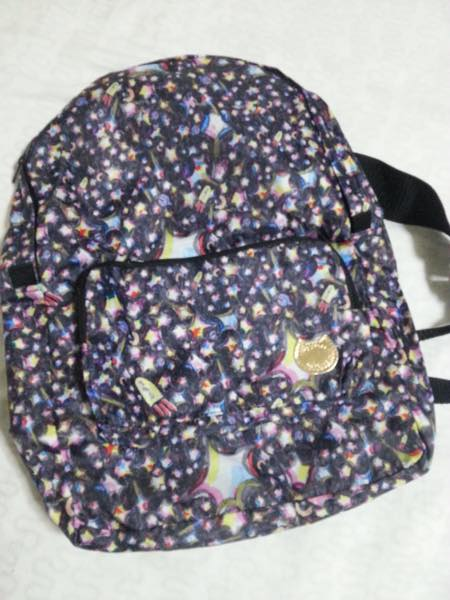
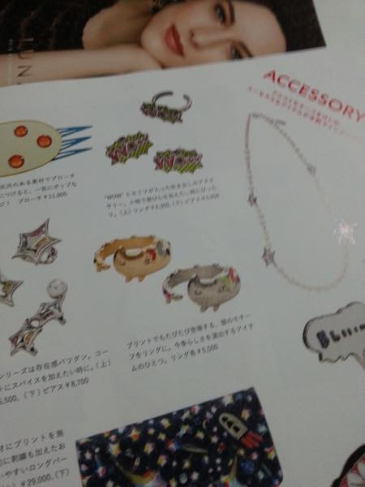
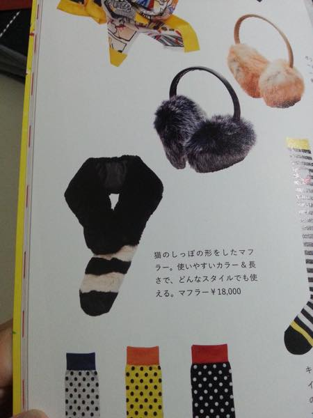
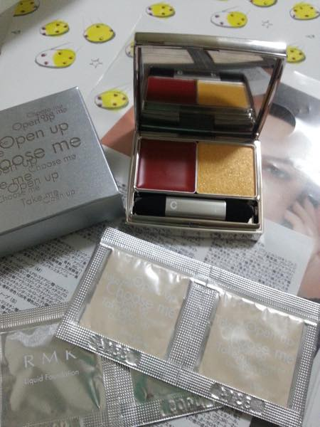
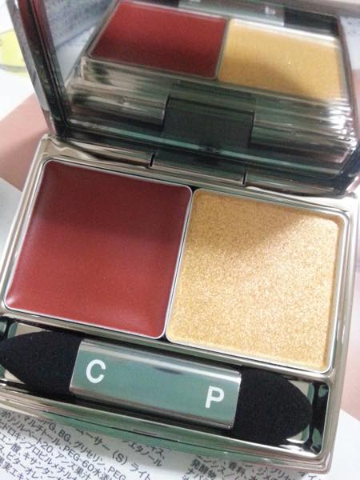

이번 여행에서 구입한것중 최고 맘에드는 두개
비오레 아쿠아 리치 선크림 + 림멜 CC 크림
선크림 바르고 림멜 CC 바르면
둘다 엄청 가볍고 얇게 발리면서
대충 사람꼴은 만들어 줍니다 ^^;;
림멜 파운데이션도 샘플로 많이 사용해봤는데 늠 좋아요
이 브랜드는 립제품 냄새가 이상해서 ^^;;; 잘 손이 안가는데
파운데이션 & CC 크림은 늠 맘에드네용//
말그대로 airy finish 에용
굉장히 가볍고 얇게 발리면서 어느정도 커버도 해줍니다 :D

요건 왜 진작 안샀을까 후회하는 제품
사진찍기 귀찮아서(...) @cosme 에서 가져왔습니다 ^^;;
사진에서는 5위 - 라고 나와있는데
제가 드럭스토어 갔을때는 1위 라는 광고보고 혹해서 사왔어요 ^^;;
클렌징 리무버로 지우고 오일로 지우고 다시 폼으로 세안해도
면봉으로 눈 주위 슥슥 닦으면 섀도우 아직 남아있고 그러는데
요거 한장으로 색조 다 지울수 있어서 좋습니다
티슈로 닦아내는거라 색조가 눈주위에 남아있나 확인도 가능하고
맘에들어용///

긴자 돌아댕기다가 발견한 괭이 선글라스
2천엔 정도였는데 똑같은걸 시부야 109에서 천엔에 발견!!
바로 집어왔습니다 ^^ 음휏휏 난 승리(?)했어 ㅋㅋ
이번 여행 집착은 '고양이' 입니다 ㅋㅋㅋㅋㅋ
고양이 아이템 이라던가 패턴만 보면 정신을 못차려요
오늘은 시부야에서 하는 고양이 사진전도 댕겨왔습니다 ㅋㅋㅋ
돌아다니면서 구경한 브랜드 중에
츠모리치사토 와 메르시보쿠가 젤 맘에드는군욤
매장 보일때마다 들락거리고 있습니다 ^^;;

해서 무크북 구입
위에 커버씌운 책은 김여사의 주문품 ^^;;
부록으로 백팩을 주는데 이게 참 구릴거 알면서도
얼마나 구릴지 궁금해서 잡지를 사게되는군욤;;; ☞☜;;;;

마법의(?) 쉐입 ㅋㅋㅋㅋ

그냥저냥 쓸만한 백팩입니다 ^^
귀여우니까 언젠가는 사용하겠지 (←??)
패턴이 늠 귀여워요///

그리고 무크지에 실린 이 반지가 늠 맘에들어서
당장 그 다음날 매장을 찾아갔는데
신상이라 9월초쯤 나온다고 하더군욤.........OTL
크흑;ㅂ; 여행중이고 8월말까지 있을거라니까
미안할정도로 열심히 구매방법이라던가 입고일을 알아봐줘서
미안했어요 ^^;;;;

그리고 요 목도리도 맘에드는군욤//
역시 11월 디자인페스타 기간맞춰서 한번 더 와야....ㅋㅋㅋ


그리고 RMK Urban Gold 뻘겅+금색 섀도우 사왔습니다 ^^
훗훗 보고있음 걍 흐뭇하네염;;
색이 이뿨////
글엄 남은 기간도 화이팅(?) 입니당 ^^